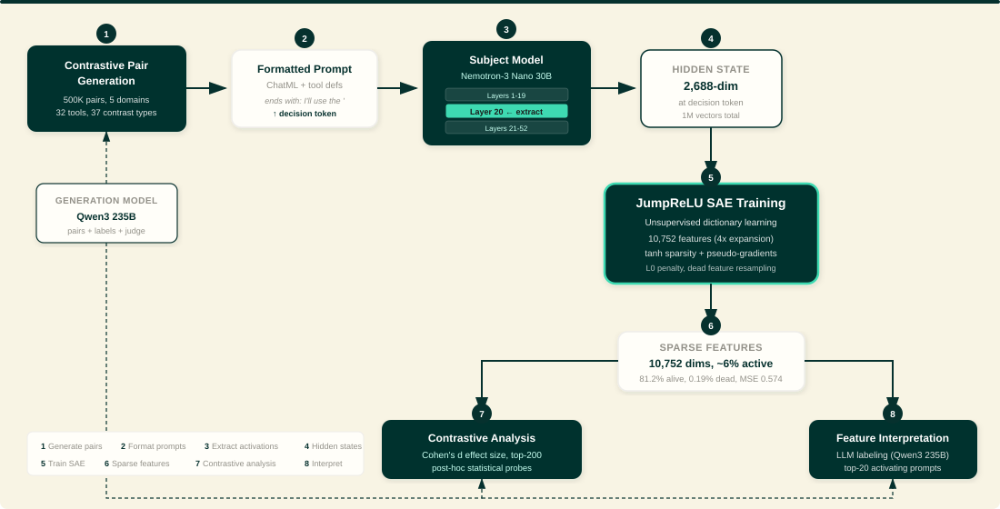
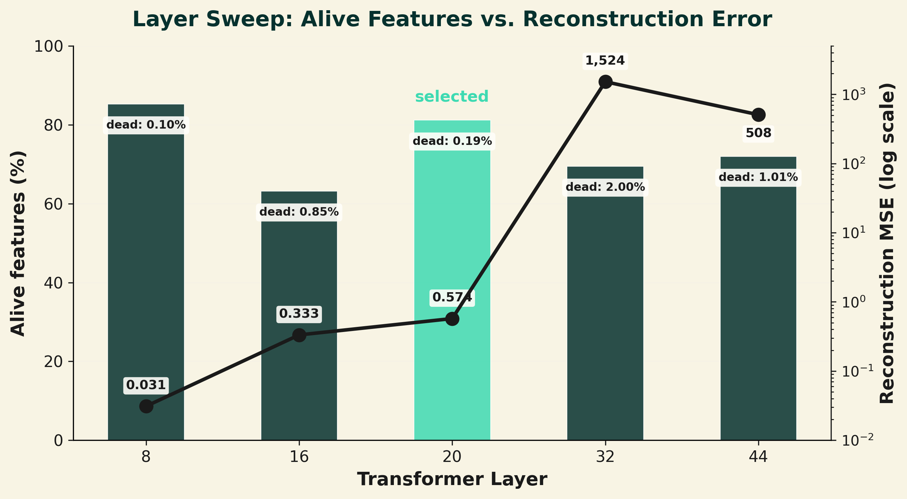
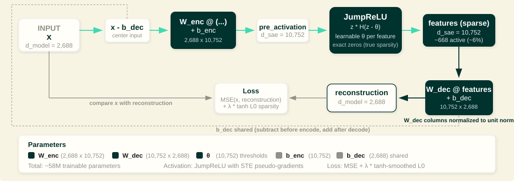
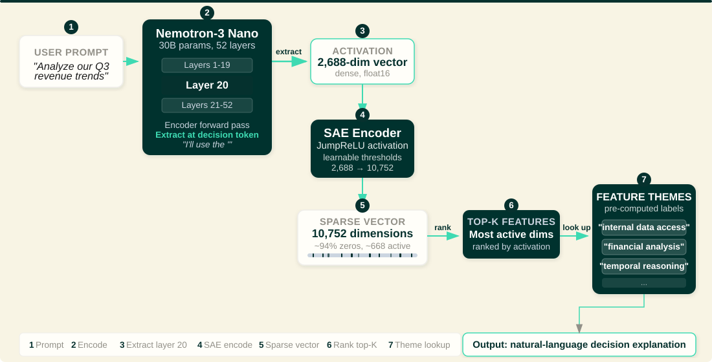
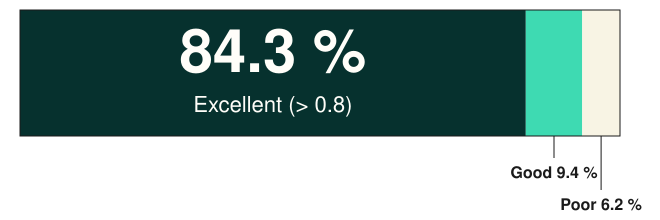
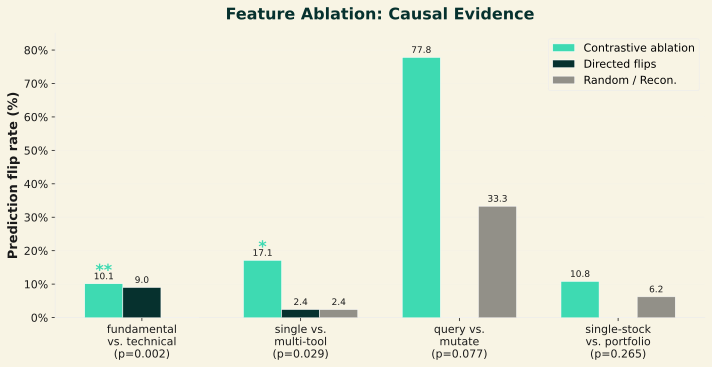
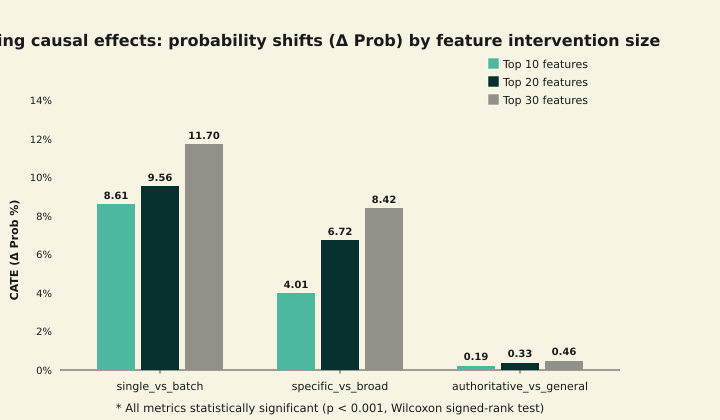

Modern AI agents autonomously pick among databases, code, web search, and sub-agents. When the agent chooses is observable — why it chose remains opaque.
We open the box at the token where the model commits to a tool, decomposing its hidden state into human-readable features.

Nemotron-3-Nano-30B is a 52-layer model. A single SAE cannot decompose its MoE layers — reconstruction MSE explodes by >500× at the sparse-routed expert layers.

An overcomplete dictionary that decomposes hidden states into monosemantic features. JumpReLU thresholds θi produce exact zeros — true sparsity — trained with a smooth tanh surrogate.

The SAE decomposes Layer-20 activations into 10,752 features. Without contrastive supervision, named concepts emerge from raw activations alone:
Each feature carries an LLM-generated label, a token-level fuzzing score (aggregate 0.912 ± 0.008, p < 10⁻⁴), and its row in the contrastive-ablation table.
Every tool call ships with a rationale. At inference, the top-K active features at the decision token map to pre-computed labels — no extra LLM call.

✓ human-readable explanation shipped with every tool call
0.8), 9.4% good, 6.2% poor">Transparency of agent decisions underpins trust as AI regulation expands. We ground this work in the RAFT framework [Gandhi 2025] — a lightweight value-criteria-indicator approach to Responsible AI.
Prediction-flip rate by contrast type — significance shown per group.

Targeted activation patching across expanding feature sets (Top 10/20/30) measures the Conditional Average Treatment Effect. The staircase rise signals abstract tool parameters governed by distributed causal circuits, not localized bottlenecks.
